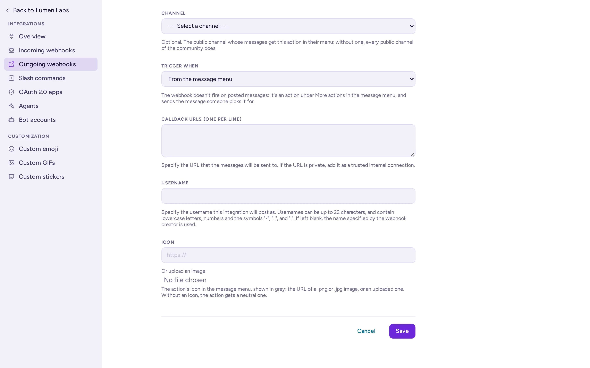

خطافات الويب
يتيح خطاف الويب الوارد لنظام آخر النشر في قناة عبر إرسال JSON إلى عنوان URL سري. أما خطاف الويب الصادر فيقوم بالعكس: فهو يرسل الرسائل إلى عنوان URL الخاص بك، سواء كانت تبدأ بكلمة محفّزة أو اختارها أشخاص في قائمة الرسائل، ثم ينشر ما ترد به.
مكان إدارة خطافات الويب
افتح قائمة الفريق، ثم إعدادات الفريق، وانقر على التكاملات في نهاية علامات التبويب. تعرض صفحات التكاملات للفريق الحالي خطافات الويب الواردة وخطافات ويب صادرة. ينتمي كل خطاف ويب إلى فريق واحد.
افتراضيًا، يمكن لمديري المجتمع ومديري النظام إنشاء خطافات الويب. يمكن لمدير النظام منح هذا الحق لأدوار أخرى في إعدادات الأذونات الخاصة بوحدة التحكم بالنظام. كما يمكن لمدير النظام تعطيل كل نوع على حدة في وحدة التحكم بالنظام › التكاملات › إدارة التكاملات: تكون كلتا الخييارين تفعيل خطافات الويب الواردة وتفعيل الخطافات الصادرة مفعّلتين افتراضيًا.

إنشاء خطاف ويب وارد
- في التكاملات، اختر خطافات الويب الواردة، ثم إضافة خطاف ويب وارد.
- املأ العنوان والوصف: فهما يظهران فقط في صفحات التكاملات.
- اختر القناة التي ستُرسَل إليها الرسائل افتراضياً. إذا كانت القناة خاصة، فيجب أن تكون عضواً فيها.
- حدد تثبيت على هذه القناة إذا كان يجب عدم السماح للمُرسلين بالنشر في مكان آخر.
- اختيارياً، اضبط اسم المستخدم وعنوان صورة الملف الشخصي لرسائله (انظر الاسم والأيقونة).
- اختر حفظ. انسخ العنوان URL المعروض:
https://chat.example.com/hooks/<key>.
عبر واجهة برمجة التطبيقات: POST /api/v4/hooks/incoming مع {"channel_id", "display_name", "description", "username", "icon_url", "channel_locked"}؛ حيث يمثل id في الاستجابة المفتاح. من سطر الأوامر: amctl webhook create-incoming --channel <channel id> --user <user> --display-name "CI".
إرسال رسالة إلى خطاف ويب وارد
curl -X POST https://chat.example.com/hooks/xgh5ycrx1jf7mbs9w8z4c8e7ho \
-H 'Content-Type: application/json' \
-d '{"text": "Deploy of **api 2.4.0** finished :white_check_mark:"}'يرد الخادم بـ 200 مع جسم ok. كما يقبل application/x-www-form-urlencoded مع JSON في حقل payload، كما تفعل خطافات الويب في Slack، لذا تعمل الأدوات المصممة لـ Slack عادةً دون تغيير.
| الحقل | المعنى |
|---|---|
text | الرسالة بصيغة Markdown. إلزامية ما لم تكن هناك attachments. يتم تقسيم النص الذي يتجاوز حد طول الرسالة الخاص بالخادم إلى عدة رسائل. |
channel | قناة أخرى من قنوات المجتمع الذي ينتمي إليه الخطاف، بالاسم (ops-alerts أو #ops-alerts)، أو @username لإرسال رسالة مباشرة من مالك الخطاف. يُرفض هذا الخيار إذا كان الخطاف مقفلاً على قناته. الاسم القديم town-square لا يزال يصل إلى القناة الافتراضية للمجتمع، والتي تُسمى الآن general. |
username, icon_url, icon_emoji | الاسم والصورة المعروضة، عندما يسمح الخادم بالتجاوز. |
attachments | مرفقات الرسالة، المعروضة على شكل بطاقات (أدناه). |
props | خصائص إضافية مخزنة على الرسالة، من أجل التطبيقات التي تقرأها. يتطلب النشر في قناة منتدى props.am_thread_title (من 1 إلى 100 حرف): يُرفض الخطاف إذا لم يكن موجودًا (انظر المنتديات تقبل المواضيع فقط). |
type | نوع رسالة مخصص، مثل custom_poll، لتطبيق يعرضه. تُرفض الأنواع التي تبدأ بـ system_. |
root_id | المعرف (ID) لأول رسالة في سلسلة رسائل، للرد في تلك السلسلة. |
priority | أولوية الرسالة، على سبيل المثال {"priority": "urgent"}. |
silent | إرسال الرسالة دون إشعارات دفع عند تعيين القيمة إلى true. |
تتحمل كل رسالة ينشرها خطاف الويب وسم BOT بجانب اسمها، حتى عندما تظهر باسم منشئها، حتى يتمكن الأشخاص من تمييزها عن رسالة شخص حقيقي. لا تُطلق رسائل خطاف الويب أي خطافات ويب صادرة.
الاسم والأيقونة
ينشر الخطاف باسم الشخص الذي أنشأه، ما لم يسمح الخادم بالتجاوز. يوجد إعدادان في وحدة التحكم بالنظام › التكاملات › إدارة التكاملات، كلاهما معطَّل افتراضياً، يغيّران ذلك:
- تفعيل التكاملات لتجاوز أسماء المستخدمين (
ServiceSettings.EnablePostUsernameOverride): يُعرض اسم المستخدم الخاص بخطاف الويب أوusernameالخاص بالطلب بدلاً من الاسم؛ وإذا لم يُحدد أي منهما، يكون الاسمwebhook. - تفعيل تجاوز التكاملات لأيقونات صور الملف الشخصي (
ServiceSettings.EnablePostIconOverride): تُعرض صورة الملف الشخصي الخاصة بخطاف الويب، أوicon_urlأوicon_emojiالخاص بالطلب.
تتفوق القيمة الموجودة في الطلب على القيمة المحفوظة على الخطاف.
المرفقات
تضيف المرفقات محتوى منسقاً أسفل النص. تتبع مرفقات الرسالة تنسيق مرفقات رسائل Slack:
{
"text": "Build failed on `main`",
"attachments": [{
"fallback": "main #1902 failed",
"color": "#d24b4e",
"author_name": "GitHub Actions",
"author_icon": "https://chat.example.com/static/ci.png",
"title": "main #1902 failed",
"title_link": "https://ci.example.com/runs/1902",
"text": "Commit `0f4d8e2` by Jonas Weber",
"fields": [
{"title": "Branch", "value": "zephyr-3.7", "short": true},
{"title": "Duration", "value": "3m 40s", "short": true}
],
"footer": "Lumen CI",
"ts": 1760000000
}]
}| الحقل | المعنى |
|---|---|
fallback | نص عادي للأماكن التي لا يمكنها عرض البطاقة، مثل الإشعارات. |
color | الشريط الملوّن: لون بصيغة سداسية، أو good، warning، danger. |
pretext | نص أعلى البطاقة. |
author_name, author_link, author_icon | سطر ترويسة صغير. |
title, title_link | عنوان البطاقة، ويمكن أن يكون رابطاً اختياريًا. |
text | نص البطاقة، بصيغة Markdown. |
fields | قائمة من {"title", "value", "short"}؛ تُوضع حقول short جنباً إلى جنب. |
image_url, thumb_url | صورة كبيرة أسفل، أو صورة صغيرة على الجانب. |
footer, footer_icon, ts | سطر تذييل ووقت (بالثواني وفق Unix). |
actions | الأزرار والقوائم: راجع الرسائل التفاعلية. |
البطاقات: المراحل والمخططات
تضيف Antimatter حقلين إلى المرفقات، ترسمهما الواجهة الافتراضية:
stages: خطوات خط الأنابيب على شكل حبوب، بحد أقصى 20. كل خطوة هي{"name", "status"}، مع حالة تكونpassedأوfailedأوrunningأوpendingأوskippedأوcanceled.chart: مخطط خطي صغير للقيم الأخيرة،{"values": [2 to 200 numbers], "threshold": number, "label": "…"}. يُرسم الحد كخط متقطع، وهو يمثل حد التنبيه.
{
"attachments": [{
"color": "danger",
"title": "main #1902 failed",
"stages": [
{"name": "build", "status": "failed"},
{"name": "unit", "status": "skipped"},
{"name": "publish", "status": "skipped"}
]
}, {
"color": "warning",
"title": "API latency above 400 ms",
"chart": {"values": [210, 230, 260, 390, 450, 470], "threshold": 400, "label": "p95 latency, ms"}
}]
}تتجاهل الواجهة الكلاسيكية والعملاء الآخرون هذين الحقلين، لذا ضع المعلومات الأساسية في text أو fields أيضاً.
إنشاء خطاف ويب خارجي
يراقب خطاف الويب الصادر القنوات العامة في الفريق. يرسل رسالة إلى عنوان URL الخاص بك إما عندما تطابقة الكلمة الأولى من الرسالة إحدى كلمات التشغيل الخاصة به، أو عندما يختار شخص ما خيارًا من قائمة الرسالة (وهو إجراء رسالة).
- في التكاملات، اختر خطافات ويب صادرة، ثم إضافة خطاف ويب صادر.
- املأ العنوان والوصف.
- اختر نوع المحتوى للطلب:
application/x-www-form-urlencodedأوapplication/json. - اختر القناة، وأدخل كلمات المحفز (كلمة في كل سطر)، أو كلاهما. إذا حددت قناة دون كلمات محفز، تُرسل جميع رسائل تلك القناة. إذا حددت كلاهما، يجب أن تطابق الرسالة كلا الشرطين.
- تحت المحفز عند، اختر يبدأ الكلمة الأولى بكلمة محفّزة مطابقة تمامًا، أو يبدأ الكلمة الأولى بكلمة محفّزة، أو من قائمة الرسالة. عند اختيار من قائمة الرسالة، تختفي كلمات المحفز، وتصبح القناة اختيارية (بدونها، يُعرض الإجراء في كل القنوات العامّة للمجتمع)، ويصبح العنوان إلزاميًا: فهو اسم الإجراء في القائمة.
- أدخل روابط الاستدعاء (رابط واحد في كل سطر). يحصل كل رابط على كل رسالة مطابقة.
- اختياريًا، اضبط اسم المستخدم وصورة الملف الشخصي المستخدمة للردود. للإجراء القادم من قائمة الرسالة، يحل حقل الأيقونة محل صورة الملف الشخصي: وهو عنوان URL لصورة بصيغة .png أو .jpg أو، في واجهة Antimatter الافتراضية، صورة مرفوعة. تظهر الأيقونة باللون الرمادي في القائمة؛ وبدونها، يحصل الإجراء على أيقونة محايدة.
- اختر حفظ وانسخ الرمز المعروض. يستخدم خدمتك للتحقق من أن الطلبات تأتي من خادمك.
عبر واجهة برمجة التطبيقات: POST /api/v4/hooks/outgoing مع {"team_id", "channel_id", "trigger_words", "trigger_when", "callback_urls", "content_type", "display_name"} (قيمة trigger_when: 0 للمطابقة التامة، 1 لـ«يبدأ بـ»، 2 لـ«من قائمة الرسالة»). لا يتطلب خطاف الويب الذي تكون قيمة trigger_when فيه 2 أي كلمات محفزة، لكنه يتطلب display_name. ارفع أيقونته عبر POST /api/v4/hooks/outgoing/{hook_id}/icon (مultipart، الحقل image: PNG أو JPEG أو GIF، وتُخزَّن كصورة PNG بمقاس 128 بكسل)؛ ثم يشير icon_url إلى GET /api/v4/hooks/outgoing/{hook_id}/icon.

ServiceSettings.AllowedUntrustedInternalConnections). لا يستدعي الخادم العناوين الخاصة وإلا.الطلب الخارجي
ترسل Antimatter طلب POST مع هذه الحقول، كـ JSON أو مشفر كنموذج حسب نوع المحتوى:
{
"token": "6kd1ofo5ojr5zgu5ipfipybgnc",
"team_id": "…",
"team_domain": "lumen-labs",
"channel_id": "…",
"channel_name": "ops-alerts",
"timestamp": 1760010000000,
"user_id": "…",
"user_name": "priya",
"post_id": "…",
"text": "deploy api 2.4.0",
"trigger_word": "deploy",
"file_ids": ""
}قارن token برمز المصادقة الخاص بخطاف الويب قبل اتخاذ أي إجراء. في الإصدار المُرمّز كنموذج، يكون timestamp بالثواني بدلاً من المللي ثانية. ينتظر الخادم إجابتك لمدة تصل إلى مهلة انتهاء طلبات التكامل (30 ثانية افتراضيًا، ServiceSettings.OutgoingIntegrationRequestsTimeout).
الرد على خطاف ويب صادر
لنشر رد، أجب باستخدام JSON. لعدم نشر أي شيء، أجب بجسم فارغ.
{
"text": "Deploying **api 2.4.0** to staging…",
"response_type": "comment",
"username": "deploy-bot",
"icon_url": "https://chat.example.com/static/deploy.png"
}textوattachments: الرد. بدون أيٍّ منهما، لن يُنشر شيء.response_type:commentينشر الرد في سلسلة الرسائل الخاصة بالرسالة المحفِّزة؛ وإلا فسيُنشر في القناة.username،icon_url: تُعرض عندما يسمح الخادم بالتجاوز؛ وإلا فسيُستخدم القيم الخاصة بخطاف الويب نفسه.props،type،priority: كما هو الحال مع خطافات الويب الواردة.
يُنشر الرد باسم منشئ خطاف الويب، وباسم التجاوز إن وُجد. لأي رد أطول من إجابة سريعة، أجب فوراً ثم انشر لاحقاً باستخدام خطاف ويب وارد أو واجهة برمجة التطبيقات.
إجراءات الرسائل
إجراء الرسالة هو خطاف ويب صادر تكون قيمة المحفز عند فيه من قائمة الرسالة. لا يُطلق هذا الإجراء أبدًا عند نشر رسالة. بدلاً من ذلك، يظهر للمستخدمين في قائمة الرسالة: إجراءات الرسالة (⋯) › إجراءات أخرى، تحت عنوان التكاملات، مع أيقونته. لا تظهر إجراءات الرسائل في الواجهة الكلاسيكية. عند اختياره، تُرسَل تلك الرسالة الواحدة إلى عناوين الاستدعاء، وتظهر رسالة قصيرة تقول أُرسلت إلى اسم الإجراء، أو تُعرض ephemeral_text الخاص بك.
- مكان الظهور: في قناة خطاف الويب، أو، في حال عدم وجود قناة، في كل قناة عامة في مجتمعه. فقط القنوات العامة تحتوي على إجراءات رسائل.
- يتمتع الضيوف فقط بالإجراءات المرتبطة بالقناة التي هم أعضاء فيها، وليس بالإجراءات الشاملة للمجتمع.
- القنوات المؤرشفة والقنوات للقراءة فقط: يمكن ما يزال إرسال الرسالة. حذف القناة يؤدي إلى حذف خطافات الويب المرتبطة بها، لذا تحتفظ القناة المؤرشفة فقط بالإجراءات الشاملة للمجتمع. تُعرض الإجابة التي تعذّر على الشخص نشرها في تلك القناة له وحده.
- حد المعدل: يمكن لكل شخص تشغيل 10 إجراءات رسائل في الدقيقة، بعد دفعة أولية من 5. عند تجاوز ذلك، ترد الخادم برد
429. - الشبكات الخاصة: كما هو الحال مع خطافات الويب الصادرة الأخرى، يجب السماح بالعناوين الداخلية في السماح باتصالات داخلية غير موثوقة إلى.
الطلب
يُرسل الحمولة كـ JSON أو كترميز نموذج، حسب نوع المحتوى الخاص بخطاف الويب:
{
"token": "6kd1ofo5ojr5zgu5ipfipybgnc",
"trigger": "message_action",
"team_id": "…",
"team_domain": "lumen-labs",
"channel_id": "…",
"channel_name": "ops-alerts",
"timestamp": 1760010000000,
"user_id": "…",
"user_name": "priya",
"post_id": "…",
"post_root_id": "",
"post_create_at": 1760009000000,
"post_user_id": "…",
"post_user_name": "jonas",
"permalink": "https://chat.example.com/lumen-labs/pl/…",
"text": "The staging database is full again",
"files": [{"id": "…", "name": "df.txt", "link": "https://chat.example.com/api/v4/files/…"}],
"priority": "",
"requested_ack": false,
"burn_on_read": false
}user_idوuser_nameهما الشخص الذي اختار الإجراء؛ وpost_user_idوpost_user_nameهما مؤلف الرسالة.- تُرسل تلك الرسالة فقط، ولا تُرسل أبدًا بقية سلسلة الرسائل الخاصة بها.
- يُدرج
filesملفات الرسالة فقط إذا كان الشخص الذي اختار الإجراء مصرحًا له بتنزيلها. يتطلب تنزيلlinkجلسة أو رمزًا، مثل أي ملف في واجهة برمجة التطبيقات. - يُرسل رسالة تُحرق عند القراءة دون نصها أو ملفات، مع ضبط
burn_on_readعلىtrue. - عند الترميز عبر نموذج، تصل الملفات كمجالات متكررة من
file_idوfile_nameوfile_link، بنفس الترتيب.
الرد
يتم الرد كما في أي خطاف ويب صادر (انظر الرد على خطاف ويب صادر): يُرسل text أو attachments ردًا في القناة، بينما يُرسل "response_type": "comment" الرد في سلسلة الرسائل الخاصة بالرسالة. يمكنك أيضًا الرد باستخدام ephemeral_text (مقصوص إلى 300 حرف): يظهر للشخص الذي اختار الإجراء فقط، في الإشعار. يُرسل جسم فارغ لا شيء.
{"ephemeral_text": "Ticket OPS-412 created"}عبر واجهة برمجة التطبيقات
GET /api/v4/channels/{channel_id}/message_actions: الإجراءات التي يمكنك الاختيار منها في قناة، معidوdisplay_nameوdescriptionوicon_url. لا تُعاد الرموز أو عناوين URLs للاستدعاء.POST /api/v4/posts/{post_id}/message_actions/{hook_id}: ينفذ إجراءً على رسالة يمكنك قراءتها. يُجيب بـ{"ephemeral_text"}.
عندما لا يعمل خطاف الويب
- 501 من عنوان خطاف الويب: خطافات الويب الواردة معطّلة على الخادم.
- 400 "Failed to decode the payload…": JSON غير صالح، أو حقل النموذج ليس اسمه
payload. "No text specified." تعني أن الطلب لا يحتوي علىtextولاattachments. - 403: خطاف الويب مقفل على قناة أخرى، أو لم يعد مالكه قادراً على قراءة القناة.
- لا يُطلق خطاف ويب صادر أبدًا: القناة خاصة، أو المحفز ليس الكلمة الأولى، أو جاءت الرسالة من خطاف ويب، أو تم ضبط خطاف الويب ليُطلق من قائمة الرسالة.
- إجراء رسالة غير موجود في القائمة: القناة خاصة، أو الإجراء مرتبط بقناة أخرى، أو الشخص ضيف والإجراء لا يحتوي على قناة، أو تم إيقاف خطوط الويب الصادرة.
- 404 عند تنفيذ إجراء رسالة: الإجراء غير موجود، أو لا يغطي قناة تلك الرسالة لتلك الشخصية. 429: نفّذ الشخص أكثر من 10 إجراءات في دقيقة. 502: تعذّر الوصول إلى أي من عناوين URLs للاستدعاء (السبب موجود في السجل).
- يُرفض النشر في منتدى: تحتاج رسالة الخطاف إلى عنوان (
props.am_thread_title)؛ يحدد الخطأ السبب، مثلapp.post.forum.title_required.app_error، بدلاً من فشل عام (انظر أنواع القنوات). - السجلات: عند تفعيل تفعيل تصحيح أخطاء خطاف الويب (
LogSettings.EnableWebhookDebugging)، وتعيين مستوى السجلات إلىDEBUG، يسجّل الخادم حمولات الطلبات الواردة غير الناجحة. تُسجَّل المكالمات الصادرة غير الناجحة كـOutgoing Webhook POST failed.